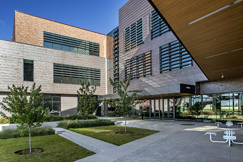

A closer look
UH at Sugar Land brings the resources of a major university into a campus built for connection. The new Student Center gives students room to focus, collaborate, recharge, and find their people.
Explore the Brazos Hall, Technology Building, Albert and Mamie George Building, Library Branch, and Student Center, all within reach of the Sugar Land community.
Need to know
The Sugar Land campus offers majors such as Digital Media, Nursing, Computer Information Systems, Biotechnology, and more.
Students may request a UHSL permit by emailing parking@uh.edu a copy of their schedule if they have at least one class at main campus.
Students have access to the esports rooms, career services, counseling, tutoring, bookstore, dining options, and recreational spaces at the Sugar Land campus.
We take this matter seriously and urge students to contact us at eos@uh.edu as soon as possible.
Students may purchase Sugar Land parking permits through their myParking account for $159.